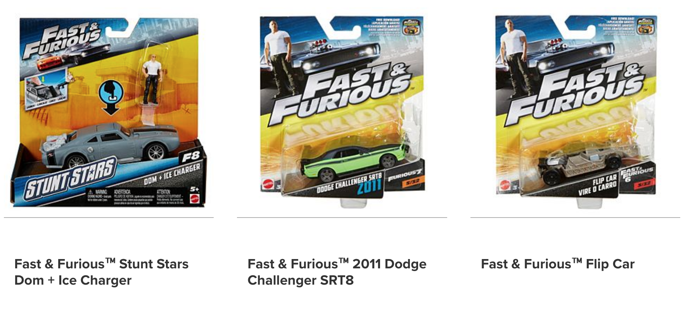
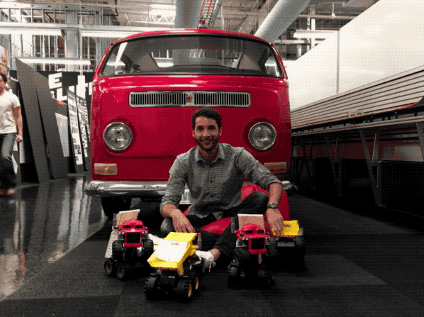

Summer in the Toxbox!
During Summer 2017, I worked in Mattel's El Segundo headquarters in the Toybox Vehicles group. Just down the hall from Hotwheels, Barbie, and a whole host of other iconic toy brands, I regularly got to interface with some of the most creative and experienced minds in the toy industry.
My specific responsibilities included acting as a project manager for The Fast & Furious line of die-cast cars. I worked on cars like those below!

I communicated with counterpart teams across the world and led weekly team meetings with managers and directors in my group. I solved problems regarding manufacturing and design, all with the intention of getting the toys on shelves to be as close as possible to the whimsical amazing ideas the toy designers create. Through this I gained experience in design for manufacturing, Agile PLM, and general project management.

I also got the chance to help out on the Disney Pixar Cars team, as well as the Matchbox playsets team, learning how an even larger range of toys go from idea to prototype to a product on a shelf. I also had two projects independent from project management work; one experimenting with electrical components in playsets, and another in optimizing a process to ensure manufacturing scheduling discrepancies are discovered as soon as they arise.